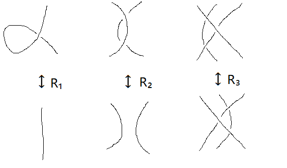
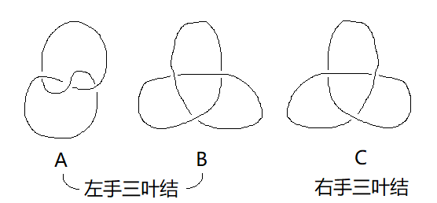
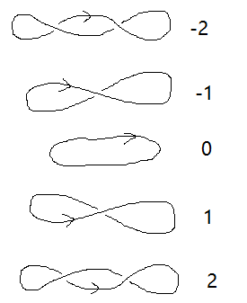

[姜伯驹《绳圈的数学》, 包志强的讲义]
纽结与链环
纽结与链环
纽结理论研究的是三维欧氏空间 `E^3` 中的拓扑学.
- `E^3` 中与圆周 `S^1` 同胚的子空间称为纽结.
形象地说, 取一条绳子任意打结, 再把两头对接, 就得到一个纽结.
- 有限多个互不相交的纽结的并集称为链环.
互不相交是指没有公共点, 即不连通.
链环的每个连通分支都是一个纽结, 而纽结无非是有一个分支的链环.
链环可以像铁链一样环环相扣, 也可以有更复杂的结构.
同痕
如果一个纽结可以通过连续形变得到另一个纽结, 中途不剪开也不粘连, 就认为它们是等价的.
严格定义如下: 称链环 `L_1, L_2` 同痕, 如果存在连续映射 `H: E^3 xx [0, 1] to E^3` 满足
- 对任意 `t in [0, 1]`, `h_t(x) := H(x, t)` 是 `E^3` 的自同胚;
- `h_0(x) = "id"`, `h_1(L_1) = L_2`.
- 投影图 是指链环在平面上的投影, 使得在平面上的每个交点处至多有两点重合.
交点处上面与下面的线分别称为上线与下线.
因为我们允许链环的连续形变, 所以任意链环都有投影图.
- 定向 给链环的每个分支都指定一个定向, 所得的有向链环的投影图称为有向投影图,
我们用线上的箭头表示它的方向.
- 交点类型 有向投影图的交点可以分为两类, 左手或者负交点 ()、 右手或者正交点 ().
可以想像面对自己的一个人🙅♀️, 左手图形代表这个人交叉双臂, 左臂在前; 右手也作类似的解释.
另一种记法是把两个箭头看作时钟的指针, 如果从上线旋转到下线的方向是顺时针, 我们就说它符合左手螺旋; 否则符合右手螺旋.
Reidemeister 变换
任意同痕的两个链环的投影图都可以通过三种初等变换 `R_1`, `R_2`, `R_3` 互相转化.
注意三种初等变换都是在投影图局部进行的, 不能有别的线介入.

三叶结 (trefoil knot)
用初等变换可以说明下面 A, B 两个投影图同痕.
我们今后将用 Jones 多项式证明 C 与 A, B 不同痕.
事实上任意一个交叉点数为 3 的纽结必定同痕于左手或右手三叶结.
区分左右手三叶结的方法是在投影图上任取一个定向, 则左手三叶结的交叉点类型都是左手,
右手三叶结则反之.

同痕不变量
交叉点数、环绕数
纽结理论的中心问题是纽结及链环的同痕分类问题. 在同痕变换下不变的性质称为同痕不变量,
它们正是鉴定、区分纽结的法宝.
交叉点数 是最简单的同痕不变量. 一个链环可以有多张投影图,
链环的交叉点数定义为这些投影图中的最少交叉点数.
对于一个链环, 怎样的投影图具有最少的交叉点数? 这个问题将用交错投影图来解答.
有向链环的
拧数或
扭数 `omega(L)` 定义如下:
`omega(L) = ` 正交叉点数 - 负交叉点数.
拧数在 `R_2, R_3` 下不变, 但在 `R_1` 下改变, 因此它并不是同痕不变量.

环绕数
设有向链环 `L` 的分支数 `ge 2`.
定义分支 `K_1` 关于 `K_2` 的环绕数为:
`"Lk"(K_1, K_2) =` `K_1` 与 `K_2` 的交点中正负交点数的总和的一半.
上述交点不含 `K_1` 自身与 `K_2` 自身的交点.
如果 `L` 恰有两个分支, 环绕数可以简记为 `"Lk"(L)`.
Jones 多项式
纽结编辑器
Jones 多项式
对任意链环的有向投影图 `L`, 将它对应为变元 `q` 的一元函数 `V(L)(q)`, 满足下面性质:
- 同痕不变性
若有向投影图 `L`, `L'` 同痕, 则 `V(L) = V(L')`.
- 标准值 平凡纽结 "〇" 对应的函数为 `V(〇) = 1`.
- 拆接关系式
`q^2 * V(左手) - q^-2 * V(右手) + (q - q^-1) * V(双手) = 0`.
其中左手 ()、
右手 ()、
双手 ()
代表三个几乎一样的有向投影图, 只在某个交叉点附近的连接方式不同.
最后, 把 `q` 换成 `t^(1//2)`, 得到的关于 `t` 的函数 `J(L)(t)` 称为 Jones 多项式.
这个 "多项式" 允许 `t` 的次数是负整数和半整数, 且系数全为整数.
拆接关系式是 Jones 多项式的一切精华.
Jones 多项式的缩写
按各项次数从小到大连续写出系数:
- 如果各项次数是整数, 就在常数项加一个下划线;
比如 `t^-1 -3 - t^2` 缩写为 `1 - ul 3 + 0 - 1`.
- 如果各项次数是半整数, 就用斜杠把正负次数的项分开;
比如 `2 t^(-3//2) - t^(1//2)` 缩写为 `2 + 0 // -1`.
计算 `5_1` (左手星星结) 和 `5_2` (左手88结) 的 Jones 多项式.
from sympy import *
q = S('q')
A = q**2
B = -q**-2
C = q-q**-1
L_5_1 = (B*(-q**-8+q**-6+q**-2)+C*(-q**-11+q**-9-q**-7-q**-3))/(-A)
expand(L_5_1) # 左手星星结 q**(-4) + q**(-8) - 1/q**10 + q**(-12) - 1/q**14
L_5_2 = (B*(-q**-8+q**-6+q**-2)+C*(-q**-5-q**-1))/(-A)
expand(L_5_2) # 左手88结 q**(-2) - 1/q**4 + 2/q**6 - 1/q**8 + q**(-10) - 1/q**12
# 记得把 q 换成 t**(1/2)
尖括号多项式
- 把投影图 `L` 每个交叉点的上线与下线互换, 得到的投影图称为原图的镜像, 记为 `L^ast`.
把纸面看作镜子的话, `L^ast` 正好是 `L` 在镜子中的倒影.
如果 `L` 与 `L^ast` 不同痕, 我们称它具有手性.
- 把有向投影图 `L` 的所有箭头反转方向, 得到的有向投影图称为原图的逆, 记为 `L^-1`.
- 连通和:
- 拼:
对有向投影图:
- `J(L^ast)(t) = J(L)(t^-1)`, 换言之镜像的 Jones 多项式只需将次数全部添负号.
- `J(L^-1)(t) = J(L)(t)`, Jones 多项式无法区分链环与它的逆.
- `J(L_1 \# L_2) = J(L_1) J(L_2)`, Jones 多项式无法区分两个相同链环的各种连通和.
- `J(L_1 ╨ L_2) = -(t^(1//2) + t^(-1//2)) J(L_1) J(L_2)`.
- 显然扭数满足 `omega(L_1 \# L_2) = omega(L_1) + omega(L_2)`,
于是只需证 `(:L_1 \# L_2 :) = (:L_1:) (:L_2:)`.
对 `L_1` 的交叉点数 `n` 做归纳. `n = 0` 时 `L_1` 平凡, `J(L_1) = 1`, 等式成立.
现在设 `n-1` 时等式成立, 对于 `n` 个交叉点的情形, 任取一个交叉点,
利用尖括号多项式的拆接关系消去这个交叉点.
8 字结不具有手性, 其 Jones 多项式 `1 -1 + ul 1 -1 +1` 是完全对称的.
反之若 Jones 多项式系数不对称, 则纽结具有手性, 如左右手三叶结是不同痕的.
Jones 多项式的状态公式
设链环 `L` 有 `N` 个交叉点, 其中正负交叉点的数目分别为 `p` 和 `n` (positive, negative).
每个交叉点要么打开 `A` 通道, 要么打开 `B` 通道, 我们记这个状态为 `S`,
用 `a(S)`, `b(S)` 表示该状态下打开的 `A, B` 通道数, `l(S)` 表示该状态链环的分支数 (loops), 则
`J(L) = sum_S (-A^2-A^-2)^(l-1) A^(a-b) (-A)^(-3(p - n))`
`= sum_S (q + q^-1)^(l-1) q^(p - 2n + b) (-1)^(b + n)`.
其中 `A = t^(-1//4)`, `q = t^(1//2)`.
`b-p-l` 一定是奇数吗??